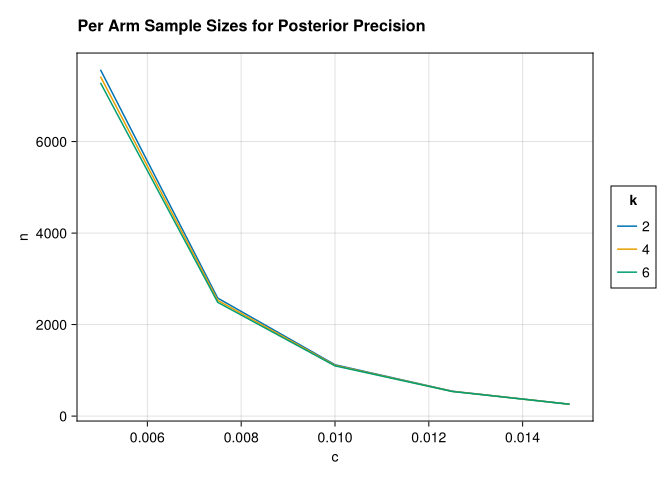

using Distributions, LinearAlgebra, CairoMakie, AlgebraOfGraphics, DataFrames, DataFramesMeta, Roots, CategoricalArrays, LogExpFunctions
CairoMakie.enable_only_mime!("png")This post highlights a Bayesian approach to sample size estimation in A/B/n testing. Say we’re trying to test which variant of an email message generates the highest response rate from a population. We consider \(k\) different messages and send out \(n\) emails for each message. After we wait for responses, we should be able to tell which message yielded the highest response rate as long as we set \(n\) high enough. But we generally can’t send out too many messages: say we’re capped at \(N\) total. How do we choose the highest \(k\) that still allows us to confidently pick which message got the highest response rate?
Overall Bayesian Approach
After observing the data, we select the arm \(j\) with the highest posterior mean response rate. The question of sample size then becomes: how large does \(n\) need to be so that we can trust this selection? A natural criterion is to minimize the expected posterior regret \(E[\delta_k - \delta_j]\) over the prior predictive, where \(\delta_k\) is the true best arm’s rate and \(\delta_j\) is the rate of the arm we chose. It turns out that this is equivalent to controlling the posterior variances of the treatment effects. To see why, add and subtract the posterior means \(E[\delta_k]\) and \(E[\delta_j]\) to decompose the regret:
\[ E[\delta_k - \delta_j] = E[(\delta_k - E[\delta_k]) + (E[\delta_k] - E[\delta_j]) + (E[\delta_j] - \delta_j)] \]
Since \(j\) is the arm with the highest posterior mean, \(E[\delta_j] \geq E[\delta_k]\), so the middle term is non-positive and can be dropped to give an upper bound:
\[ E[\delta_k - \delta_j] \leq E[(\delta_k - E[\delta_k]) + (E[\delta_j] - \delta_j)] \]
The two remaining terms are deviations of each arm from its own posterior mean, which in expectation are bounded by the respective posterior standard deviations (from Cauchy Schwartz):
\[ E[\delta_k - \delta_j] \leq \text{std}(\delta_k) + \text{std}(\delta_j) \]
A Normal Model
Choosing an independent prior over the rates for each message would be overly naive: all the messages will likely give very similar response rates, so if we know the rate for one message, we’ll have a good guess about the rates for other messages too. Instead, we’ll choose one message to be a baseline, giving it a response rate prior centered at 7%. We’ll sample independent multiples of this baseline to give the response rates for the other messages. Specifically, we’ll use a Normal approximation that admits a closed form distribution for posterior variances. The control arm’s true response rate \(\theta_0\) gets a Normal prior centered at the baseline \(p\) with standard deviation \(\tau_0\), encoding our prior belief about plausible baseline rates. Each treatment effect \(\delta_j\) is given an independent \(\mathcal{N}(0, \tau_1)\) prior, reflecting the expectation that treatments will deviate only modestly from control; the treatment arm rates are then \(\theta_j = \theta_0 + \delta_j\). Observed response indicators are modeled as \(y_i \sim \mathcal{N}(\theta_i, \sigma^2)\), where \(\sigma^2 \approx p(1-p)\) by a normal approximation to Bernoulli outcomes. By the Central Limit Theorem, this is a good approximation to the true Beta-Bernoulli posteriors once \(n\) is reasonably large.
Bayesian Linear Regression
Finding the posterior variance analytically is an instance of standard Bayesian linear regression. Stack the parameters into \(w = (\theta_0, \delta_1, \ldots, \delta_k)\), so that the arm means are \(\theta = Xw\) for a \((k+1) \times (k+1)\) design matrix \(X\) whose first column is all ones (for the shared baseline \(\theta_0\)) and whose remaining columns pick out the per-arm treatment effects.
The prior on \(w\) is Normal with mean \((p, 0, \ldots, 0)^T\) and precision matrix \(\Lambda = \text{diag}(1/\tau_0^2, 1/\tau_1^2, \ldots, 1/\tau_1^2)\):
\[ w \sim \mathcal{N}\!\left(\begin{bmatrix} p \\ 0 \end{bmatrix}, \Lambda^{-1}\right) \]
With \(n\) i.i.d. observations per arm, each contributing likelihood precision \(1/\sigma^2\), the standard Normal-Normal update gives a posterior precision that is simply the sum of the prior precision and the data precision:
\[ L = \Lambda + \frac{n}{\sigma^2}X^TX, \qquad w \mid y \sim \mathcal{N}(m, L^{-1}) \]
Since the treatment effects \(\delta_j\) are the non-baseline entries of \(w\), their posterior variances sit on the corresponding diagonal entries of \(L^{-1}\). The posterior standard deviation for any treatment effect is therefore:
\[ \text{std}(\delta_j) = \sqrt{L^{-1}_{jj}} \]
This is the quantity we target when choosing \(n\): we want it small enough that the regret bound \(\text{std}(\delta_k) + \text{std}(\delta_j)\) is acceptable.
function posterior_std(k, n; σ2=0.15(1-0.15), τ0=0.005, τ1=0.02)
X = [ones(k+1) diagm(k+1, k, -1=>ones(k))] # design matrix
Λ = Diagonal(1 ./ [τ0; fill(τ1, k)] .^2) # w prior precision
L = Λ + (n / σ2) * Symmetric(X' * X) # θ & β posterior precision
sqrt(inv(L)[2,2])
end;Normal Model Results
std_samples(k, c) = find_zero(n-> posterior_std(k, n) - c, (100.0, 10_000.0));let dfz = crossjoin(DataFrame(k=[2,4,6]), DataFrame(c=LinRange(0.015, 0.005, 5)))
draw(data(@transform(dfz,
:n=std_samples.(:k, :c), :k=CategoricalVector(:k))) *
mapping(:c, :n, color=:k) * visual(Lines),
figure = (;title="Per Arm Sample Sizes for Posterior Precision"))
end
A striking feature of the plot is how little the required per-arm sample size changes as we add more arms. This stands in contrast to frequentist procedures for multi-arm testing — such as Dunnett’s test or Tukey’s HSD — where the critical value must be inflated to hold the familywise type I error rate fixed across all pairwise comparisons, and so the required per-arm \(n\) grows with \(k\). Here there is no such correction, because we are not controlling a type I error rate at all. We are minimizing expected posterior regret, which is a property of a single decision and does not compound across arms. Adding more arms introduces more uncertainty about each treatment effect, but the hierarchical prior partially pools information through the shared baseline \(\theta_0\), so the additional cost per arm is modest.